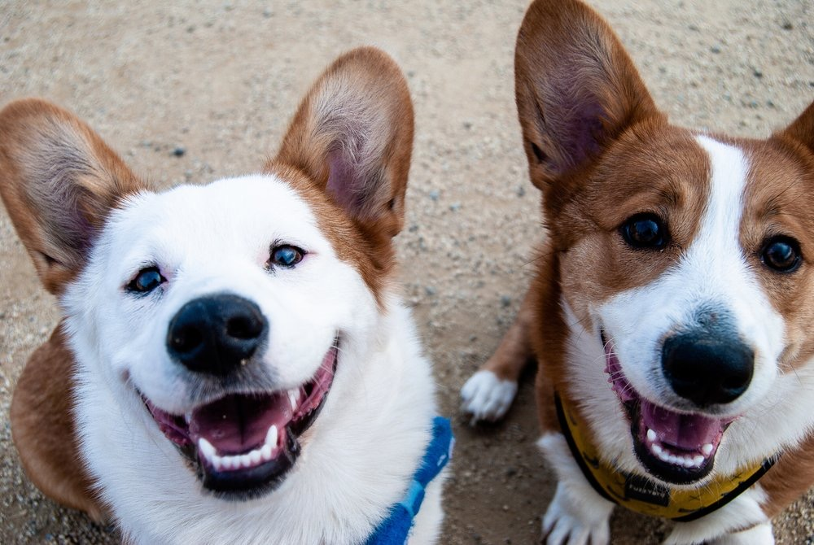

Checklist
Board & Train Checklist: What to Pack for Your Dog’s Stay
An interactive packing list so drop-off day goes smoothly.
Read Article →
Checklist
Puppy Socialization Checklist: The First 6 Months
Every experience your puppy needs before their social window closes.
Read Article →
Guide
Private Lessons vs. Group Classes: Which Is Right for Your Dog?
How to know which format will actually get you results.
Read Article →
Behavior
5 Signs Your Dog Needs Aggression Management Training
The early warning signs owners usually miss, and what to do next.
Read Article →
Service Dogs
Service Dog Training 101: What Tasks Can Be Trained?
A plain-English breakdown of task training and what it actually involves.
Read Article →
Obedience
5 Signs You’re Ready to Start Off-Leash Training
The foundational skills your dog needs before you drop the leash.
Read Article →
Getting Started
How Much Does Dog Training Cost in South Florida?
What actually drives price, so you can compare programs apples to apples.
Read Article →